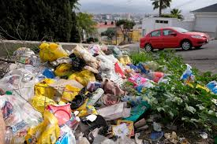

El impacto medioambiental se refiere a las consecuencias que las acciones humanas tienen sobre el medio ambiente. Estas acciones pueden ser positivas, como la conservación de recursos naturales, o negativas, como la contaminación del aire, agua y suelo. Es importante tomar medidas para reducir el impacto negativo en el medio ambiente y promover prácticas sostenibles para proteger nuestro planeta.
Dia mundial de la educacion ambiental?
El Día Mundial de la Educación Ambiental se celebra el 26 de enero de cada año y tiene como objetivo concienciar a las personas sobre la importancia de la educación ambiental para la protección y conservación de nuestro entorno. Durante este día se realizan diversas actividades, charlas y eventos para promover el conocimiento y la acción en favor del medio ambiente. Es una oportunidad para reflexionar sobre nuestro impacto en el planeta y cómo podemos contribuir a un futuro más sostenible.
¿Qué son los plásticos de un solo uso?
Los plásticos de un solo uso son aquellos materiales plásticos diseñados para ser utilizados una sola vez antes de ser desechados. Algunos ejemplos comunes de plásticos de un solo uso incluyen botellas de agua, bolsas de plástico, pajitas, cubiertos desechables, envases de comida para llevar, entre otros. Estos productos plásticos suelen ser utilizados brevemente y luego descartados, lo que genera un impacto ambiental significativo debido a su alta tasa de producción y la dificultad para su reciclaje.
El uso generalizado de plásticos de un solo uso ha contribuido al problema global de la contaminación por plásticos, ya que muchos de estos productos terminan en vertederos, océanos y otros entornos naturales, causando daños a la vida marina, la salud humana y el ecosistema en general. Para reducir el impacto negativo de los plásticos de un solo uso, es fundamental adoptar prácticas sostenibles como la reducción del consumo de plástico, la reutilización de productos y el reciclaje adecuado.
Es importante fomentar el uso de alternativas más sostenibles a los plásticos de un solo uso, como materiales biodegradables, reutilizables o compostables, para promover un estilo de vida más ecoamigable y consciente del medio ambiente.
¿Por que es necesario reducir el consumo de plastico?
Reducir el consumo de plástico es fundamental debido a su impacto negativo en el medio ambiente. Los plásticos son materiales que tardan cientos de años en degradarse, lo que significa que una vez que se utilizan y se desechan, permanecen en nuestro entorno durante mucho tiempo, contaminando suelos, cuerpos de agua y afectando a la vida silvestre.
Al reducir el consumo de plástico, contribuimos a la disminución de la contaminación y la preservación de los ecosistemas. Además, al reducir la demanda de plástico, se reduce la necesidad de su producción, lo que a su vez disminuye la extracción de materias primas como el petróleo, utilizado en la fabricación de plásticos.
Además, al reducir el consumo de plástico, fomentamos prácticas más sostenibles como la reutilización de productos, el reciclaje adecuado y el uso de alternativas más ecoamigables. Esto no solo beneficia al medio ambiente, sino que también contribuye a la concienciación sobre la importancia de cuidar nuestro planeta para las generaciones futuras.
En resumen, reducir el consumo de plástico es esencial para proteger el medio ambiente, preservar los recursos naturales y promover un estilo de vida más sostenible.
6. ¿Cuánto plástico se produce al año en México?
Según datos de 2019, la producción bruta total de plástico en México fue de $388,419 millones de pesos. Los estados con mayor producción bruta fueron el Estado de México con $71,814 millones de pesos y Nuevo León con $48,309 millones de pesos. En cuanto al ingreso total, alcanzó los $407,088 millones de pesos, destacando nuevamente el Estado de México con $76,155 millones de pesos y Nuevo León con $50,107 millones de pesos. Estos datos reflejan la significativa producción de plástico en México y la importancia de abordar el manejo sostenible de este material para reducir su impacto ambiental.
7. A nivel global ¿En qué lugar es considerado México como responsable de la contaminación por el consumo de plásticos?
México es considerado a nivel global como uno de los responsables de la contaminación por el consumo de plásticos. La problemática de la contaminación plástica es un desafío ambiental significativo a nivel mundial, y México no está exento de esta responsabilidad. La producción y el consumo de plásticos en el país han contribuido a la acumulación de desechos plásticos que afectan el medio ambiente, la biodiversidad y la salud pública.
Según datos recientes, México se encuentra entre los países con una alta generación de residuos plásticos, lo que ha llevado a la implementación de diversas medidas para abordar este problema, como la promoción del reciclaje, la reducción del uso de plásticos de un solo uso y la implementación de políticas ambientales más estrictas.
A nivel global, se reconoce la necesidad de una responsabilidad compartida entre los países y las empresas para abordar la contaminación por plásticos. Existen iniciativas internacionales y acuerdos para reducir la producción y el consumo de plásticos, así como para fomentar la economía circular y la sostenibilidad ambiental.
Es fundamental que México continúe trabajando en estrategias para reducir su impacto en la contaminación plástica y promover prácticas más sostenibles en el manejo de residuos. La conciencia ambiental y la colaboración a nivel nacional e internacional son clave para enfrentar este desafío global.

8. En México, ¿cuánto plástico produce una persona al año?
En ejo adecuado de los residuos plásticos, como el reciclaje, la reutilización y la reducción del consumo de plástico de un solo uso, son acciones clave para reducir nuestra huella de plástico y proteger el medio ambiente. Fomentar prácticas sostenibles en el uso y disposición de plásticos es fundamental para mitigar los impactos negativos en nuestro entorno.
9. ¿Por qué México se encuentra entre los países que produce mayor cantidad de polietileno tereftalato (PET)?
En México, la producción de polietileno tereftalato (PET) se ha incrementado significativamente en los últimos años debido a varios factores. El PET es un tipo de plástico ampliamente utilizado en la fabricación de envases para bebidas, alimentos, productos de limpieza y otros productos de consumo. La demanda de PET ha aumentado debido a su versatilidad, ligereza y resistencia, lo que lo convierte en un material popular en diversas industrias.
México se ha convertido en un importante productor de PET debido a su ubicación geográfica estratégica, su infraestructura industrial desarrollada y su mano de obra calificada. Además, la creciente demanda de envases de PET en la industria de bebidas y alimentos ha impulsado la expansión de la producción de este material en el país.
Otro factor clave que ha contribuido al aumento de la producción de PET en México es la presencia de empresas multinacionales y nacionales dedicadas a la fabricación de envases de plástico. Estas empresas han invertido en tecnología avanzada y procesos de producción eficientes para satisfacer la demanda del mercado nacional e internacional.
Además, la economía mexicana ha experimentado un crecimiento constante en sectores como el empaque y el embalaje, lo que ha impulsado la producción de PET y otros plásticos en el país. La industria del plástico en México se ha consolidado como un importante motor de la economía, generando empleo y contribuyendo al desarrollo industrial.
En resumen, México se encuentra entre los países que producen una gran cantidad de polietileno tereftalato (PET) debido a factores como la demanda creciente de envases de plástico, la infraestructura industrial desarrollada y la presencia de empresas especializadas en la fabricación de PET.
10. ¿Aproximadamente al año cuantas toneladas de plástico van a parar a los océanos?
En México, la producción de polietileno tereftalato (PET) se ha incrementado significativamente en los últimos años debido a varios factores. El PET es un tipo de plástico ampliamente utilizado en la fabricación de envases para bebidas, alimentos, productos de limpieza y otros productos de consumo. La demanda de PET ha aumentado debido a su versatilidad, ligereza y resistencia, lo que lo convierte en un material popular en diversas industrias.
México se ha convertido en un importante productor de PET debido a su ubicación geográfica estratégica, su infraestructura industrial desarrollada y su mano de obra calificada. Además, la creciente demanda de envases de PET en la industria de bebidas y alimentos ha impulsado la expansión de la producción de este material en el país.
Otro factor clave que ha contribuido al aumento de la producción de PET en México es la presencia de empresas multinacionales y nacionales dedicadas a la fabricación de envases de plástico. Estas empresas han invertido en tecnología avanzada y procesos de producción eficientes para satisfacer la demanda del mercado nacional e internacional.
Además, la economía mexicana ha experimentado un crecimiento constante en sectores como el empaque y el embalaje, lo que ha impulsado la producción de PET y otros plásticos en el país. La industria del plástico en México se ha consolidado como un importante motor de la economía, generando empleo y contribuyendo al desarrollo industrial.
En resumen, México se encuentra entre los países que producen una gran cantidad de polietileno tereftalato (PET) debido a factores como la demanda creciente de envases de plástico, la infraestructura industrial desarrollada y la presencia de empresas especializadas en la fabricación de PET.